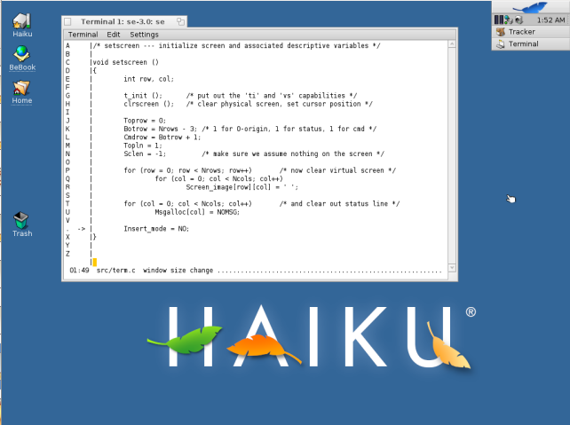
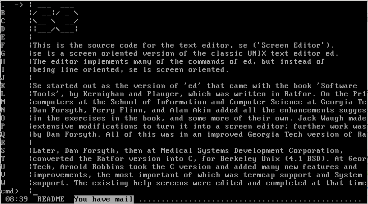
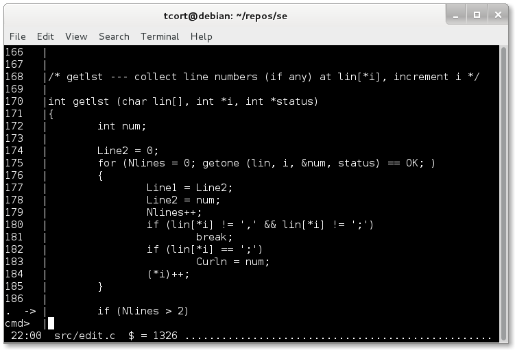

Screenshots |
|
|

Figure 1. se on Haiku R1/Alpha 4.1 (showing how it correctly handles window resizing)

Figure 2. se on OpenBSD 5.2 (showing off the e-mail notification feature)

Figure 3. se on Debian GNU/Linux 7.0 (with oa and ol$ options enabled)
|
|